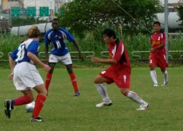

Calvert fires City to Opening Day Victory
Time: 10am, November 1, 2009 Venue: Bai Ling Bridge Riverside Park
Conditions: Wet
By Michael Christie
With an excellent squad assembled for the 2009/2010 BML season, the management team of Dan Calvert and Ross Conlon had a difficult job naming a starting eleven for the opening game. They decided on Dale Neal in goal, a three-man defence of Tim Murphy, Yunusa Njie and Matt Wharton, with Steven Raymond and Ross Conlon on the flanks. In the centre, City played a three-man midfield of Ebrima Njie, Mike O’Gorman and Spencer Pangborn, with Alex Ramirez in the hole behind Dan Calvert leading the line. This was the first time in the history of Taipei City FC that two brothers started a BML game together. Congratulations to Yunusa and Ebrima!

As soon as the game began, City took the ball to the Bulien penalty area–where it remained most of the time. Five minutes into the game, though, a speculative long ball from Bulien forced Dale to charge off his line. With unmatchable confidence, he caught the ball and held it to his chest, and then stood there an age, seeming to bask in the effortless superiority of his goalkeeping. That was until the referee awarded the opposition a free kick–because Dale was at least five yards outside the penalty box! The resulting deflected free kick found its way into the TCFC net, making it 1-0 to Bulien.

The response from City was swift. Bulien predictably fell back into their own half and looked to catch City on the break. But now, and for the rest of the match, it was all City. The City players on the field in the first half have all played much better in the past and didn’t do much to add to their reputations. That said, they were still far too strong for the returning Bulien side. City stuck to the game plan throughout: closing down Bulien in their own half, and passing the ball patiently across the park looking for an opening in the Bulien defence. City’s hunt for a goal finally ended when Calvert finished from a nice left-wing cross after a flowing move to level. Ed Cartee duly came on for Conlon, who is still recovering from a year on the sidelines with knee problems. It was 1-1 at half-time. More goals would have been nice, but City had successfully dominated the half.
Fifteen minutes into the second half, Ramirez made way for Badou Njie. Not long after, Calvert finished from a Pangborn pass to put City ahead. With the lead established, Pangborn made way for Michael Christie to maintain the pressure and close Bulien down before they could mount any attacks. Essentially, each of the substitutions was like for like, and there was simply no let-up for Bulien. Calvert somehow managed to steal a goal from Ebrimha to complete a dubious hat-trick and, sated with his goals, came off for Dawda Fatty. Wharton made way for John Phillips and, moments later, the full-time whistle was blown. City had shown itself to be a lot tougher to break down than last season, with O’Gorman proving a solid anchor in front of the defence.
{kind=link}
The Calvert-Conlon combo has assembled a superior squad, but nothing has been proven yet. The first game is won. Job done on Sunday, that’s all.